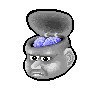
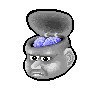

|  |
Anatomist commands reference: Camera |
|
|  |
Anatomist commands reference: Camera |
|
| Attribute: | Type: | Description: |
| windows | int_vector | windows to act on |
| boundingbox_min | float_vector (optional) |
New in Anatomist 3.1 set the viewport bounding box (min part) in the window coordinates system. |
| boundingbox_max | float_vector (optional) |
New in Anatomist 3.1 set the viewport bounding box (max part) in the window coordinates system. |
| cursor_position | float_vector (optional) | set cursor position (and also slice plane position) (cf LinkedCursor) |
| observer_position | float_vector (optional) | camera position (3 coords) |
| slice_quaternion | float_vector (optional) | rotation of the oblique cut plane (4 normed components) |
| slice_orientation | float_vector (optional) |
New in Anatomist 4.4 oblique cut plane orientation, as a normal vector (3 components) |
| view_quaternion | float_vector (optional) | rotation (4 normed components) |
| force_redraw | int (optional) | force redraw the view: by default views are only redrawn after a slight delay so as to only redraw once if several modifications are done. In "movie" mode, one wants to be sure that the image is correctly updated and saved. | zoom | float (optional) | zoom factor (1=normal) |